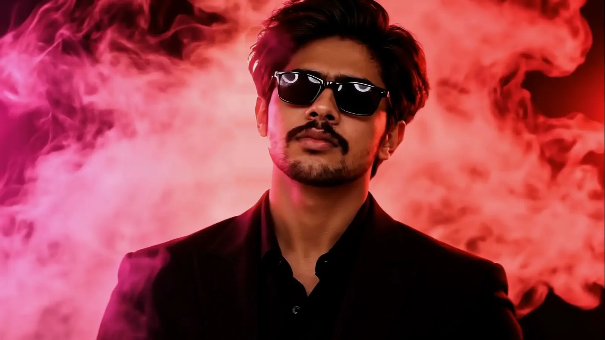
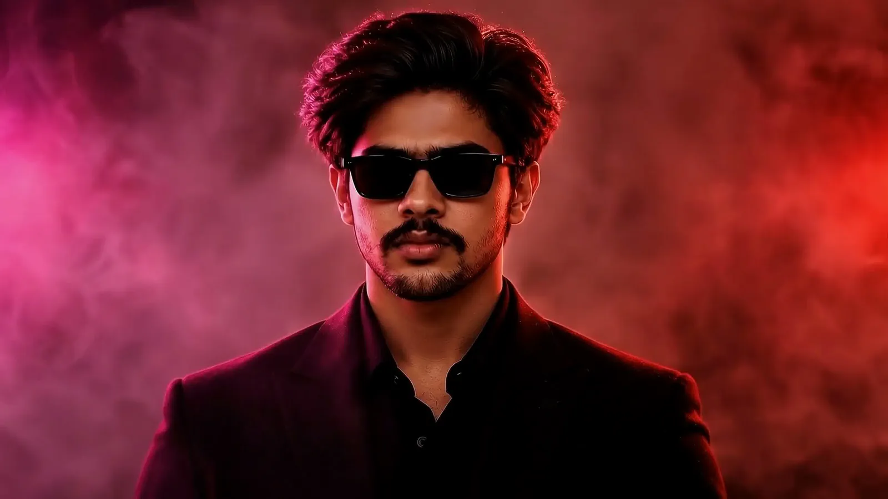

01
Orbit
A calmer workspace for moving ideas forward.
DEMO SCOPE Product engineeringPROPOSED STACK TypeScript · React · PostgreSQLFOCUS State, clarity, collaboration

SAHAL KV / SOFTWARE ENGINEER
I’m Sahal. I care about how software works,
and how it feels to use.
Three ways to think through a product.
From the first question to the last detail.
Demo projects · illustrative case studies
A calmer workspace for moving ideas forward.
A considered path from discovery to checkout.
Useful answers from complex information.

A CURIOUS MIND. A CAREFUL CRAFT.ENGINEERING, WITH A HUMAN SIDE
I’m Sahal, a software engineer interested in the space between a strong technical foundation and an experience people enjoy using.
I like asking the extra question, understanding the small details, and finding a clear way forward.
Request my résuméProject case studies currently use demo content.Understand who is using the product, what they need to accomplish, and which constraints matter. For Orbit’s demo brief, that means making ownership and progress easy to understand.
Keep data flow understandable and failure states intentional. Forma’s demo case study explores server-authoritative pricing, persistent cart state, and accessible form feedback.
Review the details on different devices, test keyboard paths, and measure performance. Pulse’s demo brief considers delayed data, empty results, and charts that can also be understood as text.
HAVE A ROLE IN MIND?
Tell me about your team,
your product, and the problems ahead.